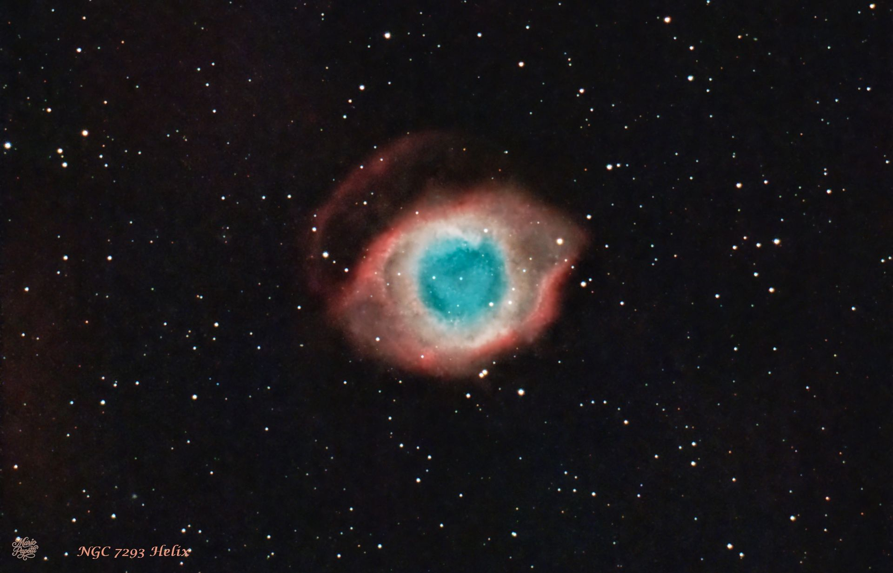
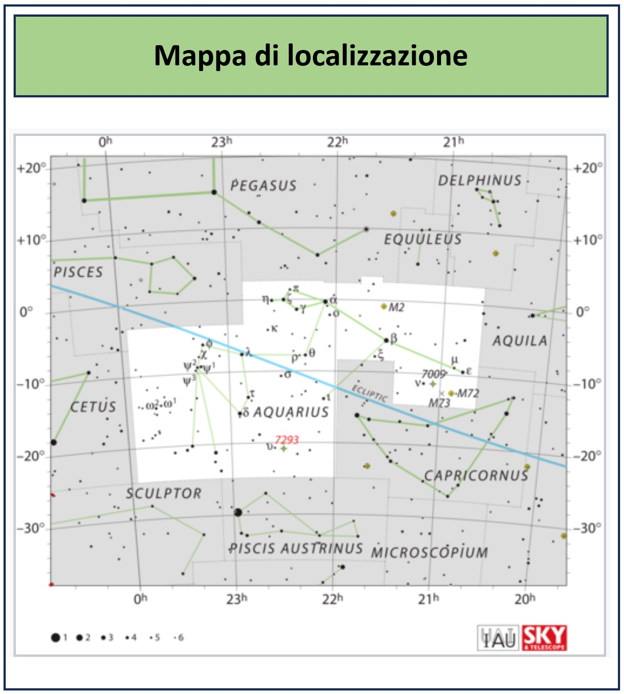

NGC 7293 • C 63 • Costellazione dell'Aquario NGC 7293 • C 63 • Aquarius

Una nebulosa che mi ha sempre affascinato per il suo aspetto, la Helix Nebula: catalogata come NGC 7293 sul Nuovo Catalogo Generale o come C 63 sul catalogo Caldwell, un importante catalogo astronomico di 109 oggetti molto appariscenti del profondo cielo. The Helix Nebula has always fascinated me because of its appearance. It is catalogued as NGC 7293 in the New General Catalogue and as C 63 in the Caldwell catalogue, an important astronomical catalogue of 109 prominent deep-sky objects.
A questa nebulosa, proprio per il suo aspetto, sono stati attribuiti nomi diversi: Helix Nebula, che in italiano diventa Nebulosa Elica, ma anche “Eye of God” o “Eye of Sauron” (Sauron è il personaggio principale nel Il Signore degli Anelli di J. R. R. Tolkien). Because of its appearance, this nebula has been given several names: Helix Nebula, or Nebulosa Elica in Italian, as well as “Eye of God” and “Eye of Sauron” (Sauron is the main character in The Lord of the Rings by J. R. R. Tolkien).
La nebulosa Elica è una nebulosa planetaria formatasi alla fine della vita di una stella di tipo solare, quando gli strati gassosi esterni della stella espulsi nello spazio appaiono dal nostro punto di vista come se guardassimo un'elica dall'alto. Il nucleo centrale della stella, destinato a diventare una nana bianca, risplende così intensamente da rendere fluorescente il gas precedentemente espulso. The Helix Nebula is a planetary nebula formed at the end of the life of a Sun-like star. From our point of view, the expelled outer gaseous layers appear as if we were looking down onto a helix. The central stellar core, destined to become a white dwarf, shines intensely enough to make the previously expelled gas glow.
Essa si trova a circa 650 anni luce dalla Terra nella costellazione dell'Aquario, ha una magnitudine apparente pari a 7,6 ed una dimensione apparente pari a 25'. It is located about 650 light-years from Earth in the constellation of Aquarius, has an apparent magnitude of 7.6 and an apparent size of 25 arcminutes.
| Nome Name | Nebulosa Elica Helix Nebula |
| Cataloghi Catalogues | NGC 7293 • C 63 |
| Costellazione Constellation | Aquarius |
| Distanza Distance | circa 650 anni luce about 650 light-years |
| Tipo di oggetto Object Type | Nebulosa planetaria Planetary Nebula |
| Dimensione apparente Apparent Size | 25 arcmin |
| Magnitudine apparente Apparent Magnitude | 7.6 |
La Helix Nebula si trova nella costellazione dell'Aquario. La mappa mostra la sua posizione nel cielo e permette di individuare la zona di riferimento per la ricerca dell'oggetto. The Helix Nebula is located in the constellation of Aquarius. The map shows its position in the sky and helps identify the reference area for locating the object.

La mia Helix Nebula è il risultato di riprese fatte da Nole (TO) tra settembre ed ottobre 2024, con ulteriori riprese nel novembre 2025. Purtroppo il cielo inquinato e fosco mi ha fatto eliminare moltissime immagini. My Helix Nebula is the result of images captured from Nole (TO), Italy, between September and October 2024, with additional imaging in November 2025. Unfortunately, the polluted and hazy sky forced me to discard many images.
Il materiale utilizzato per l'immagine finale comprende: The data used for the final image includes:
Tempo totale di integrazione: 7 ore e 29 minuti. Total integration time: 7 hours 29 minutes.
(1) La magnitudine apparente di un corpo celeste è una misura della sua luminosità, ovvero la luminosità che l'oggetto avrebbe se la Terra fosse priva di atmosfera. La magnitudine apparente non ha unità di misura: maggiore è la luminosità dell'oggetto celeste, minore è la sua magnitudine. (1) Apparent magnitude is a measure of the brightness of a celestial object, that is, how bright the object would appear if Earth had no atmosphere. Apparent magnitude has no unit of measurement: the brighter the celestial object, the lower its apparent magnitude.
(2) Il diametro apparente di un corpo celeste è la dimensione angolare sotto la quale un osservatore vede il corpo nel cielo. È la misura del suo diametro rispetto alla distanza dall'osservatore. Si misura in gradi (°), primi d'arco (′) o secondi d'arco (″). Non indica la dimensione reale dell'oggetto, ma quanto grande ci appare nel cielo. (2) The apparent diameter of a celestial object is the angular size under which an observer sees the object in the sky. It is measured in degrees (°), arcminutes (′) or arcseconds (″). It does not indicate the object's actual physical size, but how large it appears in the sky.
| Telescopio Telescope | GSO Newton 154/600 |
| Camera principale Main Camera | ZWO ASI 294 MC Pro |
| Telescopio guida Guide Scope | 60/240 mm |
| Camera guida Guide Camera | ZWO ASI 120 Mini |
| Montatura Mount | Sky-Watcher HEQ5 SynScan GOTO |
| Acquisizione Acquisition | ZWO ASIAIR Pro |
| Elaborazione Processing | PixInsight |
L'immagine è stata elaborata in RGB con PixInsight. The image was processed in RGB using PixInsight.
Il risultato è stato ottenuto combinando dati acquisiti con filtri differenti per valorizzare separatamente le stelle e la nebulosa. The final result was obtained by combining data acquired with different filters to separately enhance the stars and the nebula.
Certamente la riprenderò ancora in futuro per migliorare ulteriormente i dettagli. I will certainly photograph it again in the future to further improve the details.